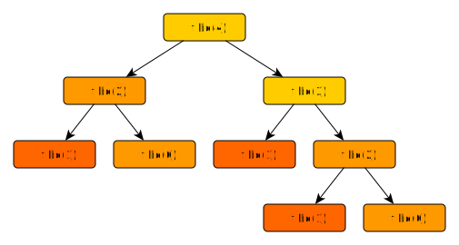
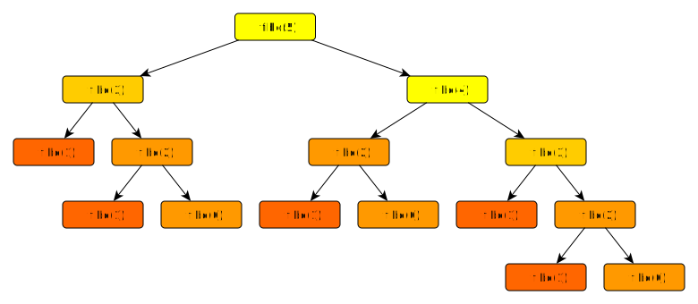
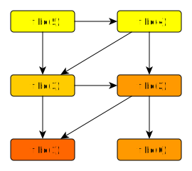
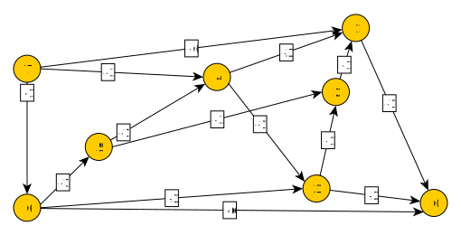
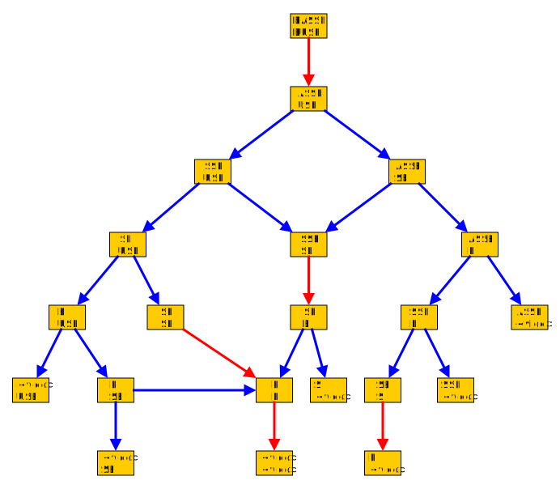

Programmation dynamique⚓︎
Un exemple bien connu⚓︎
Nous commençons à bien connaître la suite de Fibonacci
Si on la programme naïvement de manière récursive, voici ce qu'on obtient :
def fibo(n):
if n < 2:
return 1
else:
return fibo(n - 1) + fibo(n - 2)
Or, voici l'arbre des appels récursifs lors de l'exécution de fibo(4) :

Et pour fibo(5) on obtient :

Lors de cet appel, fibo(3) est appelée 2 fois, fibo(2) 3 fois, fibo(1) 5 fois et fibo(0) 3 fois !
Il n'est donc pas étonnant que fibo(40) prenne quelques secondes. Quant à fibo(100), ce n'est même pas la peine d'y
penser !
Notre stratégie, de type « diviser pour régner », décompose le calcul de fibo(n) en 2 calculs plus simples, mais ces
problèmes ne sont pas indépendants , comme l'illustre le graphe suivant, obtenu à partir du schéma précédent.

La mémoïsation⚓︎
Définition : mémoïsation
C'est le fait de garder en mémoire les solutions des sous-problèmes pour pouvoir les réutiliser sans avoir à les déterminer de nouveau.
Cela veut dire qu'avant de renvoyer un résultat, la fonction le stocke (dans une liste ou un dictionnaire).
Ce qui est fort agréable, c'est que les listes et les dictionnaires sont de type mutable, ce qui nous permet d'écrire ceci :
solution = [1, 1] # on sait que les 2 premiers termes sont 1
def fibo_dyn(n):
if n >= len(solution): # si solution[n] n'existe pas
r = fibo_dyn(n - 1) + fibo_dyn(n - 2) # on calcule récursivement
solution.append(r) # puis on stocke la solution
return r # et on la renvoie
else:
return solution[n] # sinon on renvoie la solution déjà calculée
print(fibo_dyn(500))
Et là, on peut calculer rapidement que \(F_{40}=165\,580\,141\), et même que
\(\scriptsize F_ {500}=225\,591\,516\,161\,936\,330\,872\,512\,695\,036\,072\,072\,046\,011\,324\,913\,758\,190\,588\,638\,866\,418\,474\,627\,738\,686\,883\,405\,015\,987\,052\,796\,968\,498\,626\)
Le fait d'utiliser la mémoïsation rend les choses bien plus rapides !
Exercice : programmation dynamique de la suite de Fibonacci
En s'inspirant du script précédent, écrire la fonction fibo_dyn2 qui mémoïse les solutions à l'aide d'un
dictionnaire (vide au départ).
Solution
def fibo_dyn2(n):
if n in d:
return d[n]
elif n < 2:
d[n] = 1
return 1
else:
d[n] = fibo_dyn2(n - 1) + fibo_dyn2(n - 2)
return d[n]
d = dict()
print(fibo_dyn2(10))
Comparaison de l'efficacité des 2 méthodes
Une remarque importante⚓︎
L'exemple précédent est pédagogique car il montre bien l'intérêt de la mémoïsation. Cependant il n'y a pas besoin d' utiliser cette technique pour avoir une fonction efficace : il suffit de programmer de manière itérative et non récursive :
def fibo_iteratif(n: int) -> int:
a, b = 1, 1 # on initialise a = F0 et b = F1
for _ in range(n - 1):
a, b = b, a + b # a devient b et b devient a + b
return b
Il va donc falloir trouver des exemples pour lesquels
- on ne voit pas de version itérative évidente;
- les sous-problèmes ne sont pas indépendants : sans programmation dynamique on calculerait plusieurs fois les sous solutions.
Rendu de monnaie⚓︎
Nous avons déjà rencontré cette situation l'année dernière, on y appliquait un algorithme glouton : pour rendre un montant donné, on commence par rendre les billets/pièces qui ont le plus de valeur et ainsi de suite.
Code du rendu de monnaie glouton
liste_valeurs = [500, 200, 100, 50, 20, 10, 5, 2, 1] # la liste doit être triée dans l'ordre décroissantr
def rendu_monnaie(montant: int) -> list:
liste_rendu = []
while montant > 0:
i = 0
while liste_valeurs[i] > montant:
i += 1
liste_rendu.append(liste_valeurs[i])
montant -= liste_valeurs[i]
return liste_rendu
Avec le système euro, on obtenait
>>> rendu_monnaie(47)
[20, 20, 5, 2]
Ce qui nous donne un nombre minimal de pièces/billets rendus.
Avec le système euro, l'aglorithme glouton donne toujours la solution optimale, mais ce n'est pas toujours le cas !
Par exemple, en utilisant l'ancien système monétaire Anglais
>>> liste_valeurs = [30, 24, 12, 6, 3, 1] # ancien système Anglais
>>> rendu_monnaie(48)
[30, 12, 6]
Or la solution optimale est [24, 24]...
Notre algorithme glouton ne convient donc pas dans toutes les situations. Or nous voulons, pour un système monétaire donné, trouver le plus petit nombre de pièces/billets nécessaires pour rendre une somme quelconque.
On va utiliser une méthode de type « diviser pour régner ». Soit
-
\(n\) la somme à rendre, strictement positive;
-
\(\mathscr{P}=\{P_0;\,...;\,P_k\}\) le système monétaire;
-
\(R(n)\) le nombre minimum de pièces pour rendre \(n\) selon \(\mathscr{P}\).
Alors :
-
si \(n\in\mathscr{P}\) cela veut dire qu'une pièce suffit et alors \(R(n)=1\).
-
sinon, appelons \(\mathscr{P}_n=\{x \in\mathscr{P},\, x < n\}\) l'ensemble des pièces qui valent moins que \(n\). Alors il suffit de
- regarder ce que vaut \(R(n-x)\) pour tout \(x\in\mathscr{P}_n\);
- prendre le minimum \(m\) de toutes ces valeurs; et ainsi \(R(n)= 1 + m\).
\(R_n=\begin{cases}1 & \mbox{si } n\in\mathscr{P}\\ 1+ min(\{R(n-x),\, x\in\mathscr{P},\, x<n\}) &\mbox{sinon}\end{cases}\)
On peut illustrer cette méthode pour rendre 7 livres dans l'ancien système monétaire Anglais :

On se rend compte que 2 pieces suffisent pour rendre la monnaie mais on voit aussi que \(R(4)\) est calculé 2 fois, ainsi que \(R(3)\), et caetera : les sous-problèmes sont loins d'être indépendants, la programmation dynamique va nous aider !
Programmation dynamique du rendu de monnaie optimal
Alignement de séquences⚓︎
On dispose de deux chaînes de caractères : A, qui vaut INFORMATIQUE, et B, qui vaut NUMERIQUE.
On aimerait mettre ces deux chaînes de caractères en correspondance de la manière suivante :
- On place les 2 chaînes l'une en desous de l'autre;
- Si les derniers caractères des deux chaînes coïncident, alors on passe aux caractères suivants;
- Sinon, on va ajouter un trou dans une des deux chaînes (mais laquelle ?), symbolisé par un
-et on passe aux caractères suivant.
Voici ce que cela donne :
Dans cette situation on a besoin de 9 tirets, pas moins.
L'objectif est d'aligner le maximum de lettres (donc de mettre le moins de - possible).
Ce n'est pas un problème simple, surtout quand les chaînes sont longues :
Ici pas moins de 26 tirets sont nécessaires.
Cette technique est utilisée en biologie pour mettre (entre autres) en évidence des parties communes à deux séquences d'ADN.
Encore une fois, on décompose un problème en sous-problèmes non-indépendants, comme le montre l'exemple suivant, qui nécéssite 4 tirets :
Et dont le graphe de résolution est le suivant :

Exercice
Quel est le chemin qui correspond à la solution animée ?
Bas, gauche, gauche, droite, droite, bas.
Le graphe de résolution n'est pas un arbre : les sous-problèmes ne sont pas indépendants, on a tout intérêt à utiliser la programmation dynamique.
Notons aussi qu'on peut résoudre le problème de 2 manières :
- on peut aligner les 2 chaînes « à gauche » et procéder sans le sens de la lecture;
- on peut aussi les aligner « à droite » et procéder de droite à gauche.
Enfin, il n'y a pas toujours unicité de la solution, comme le prouve l'exemple ci-dessous :
BEC B-EC BE-C
BAC BA-C B-AC
Il y a au moins deux méthodes pour programmer cet algorithme :
- Récursivement, comme on l'a fait pour le rendu de monnaie;
- Itérativement, à l'aide d'une matrice.
Programmation dynamique itérative de l'alignement de séquence